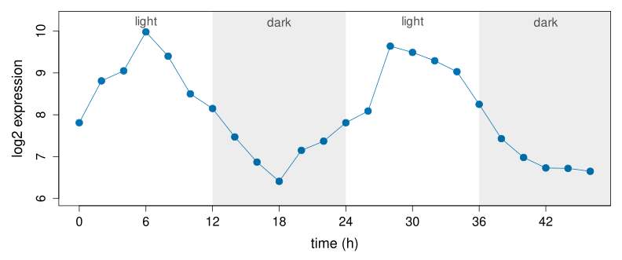
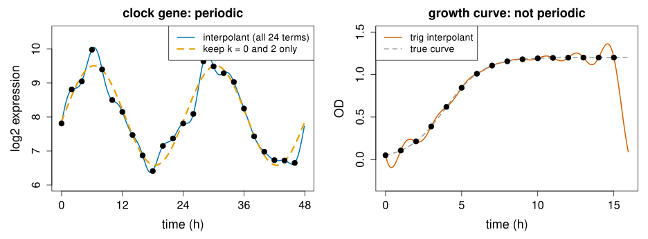
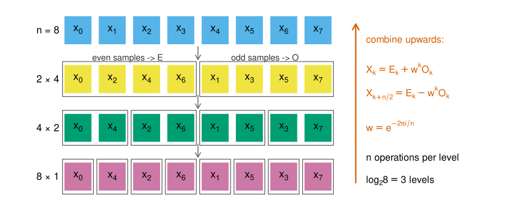
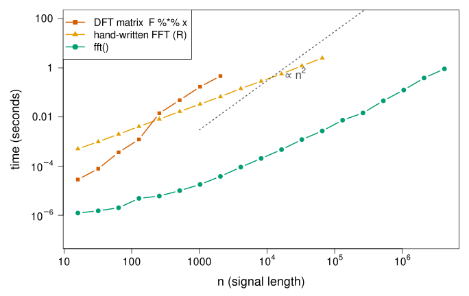
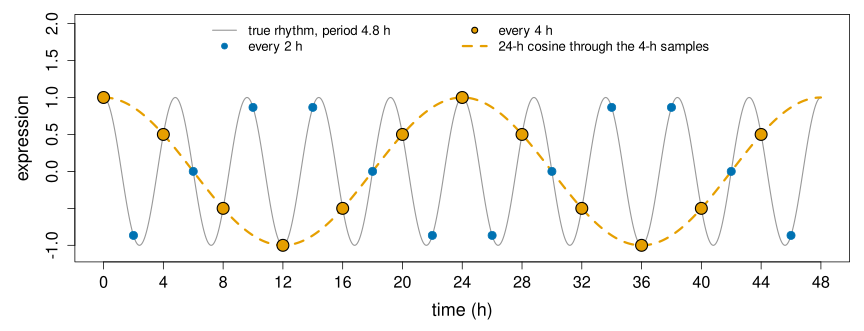
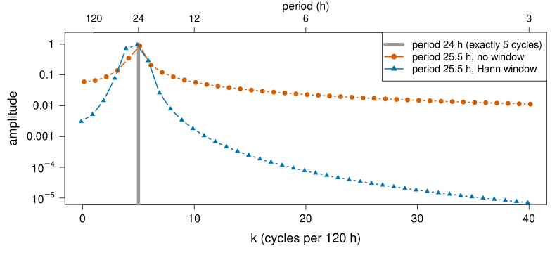
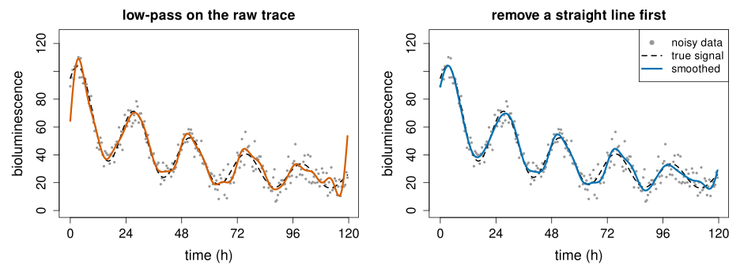
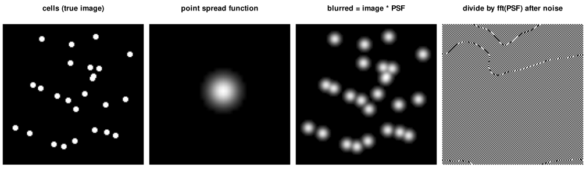

The last two units, Polynomial interpolation and Splines, interpolated data with polynomials and splines. For periodic data (daily rhythms, cell cycles, a row of pixels) a better basis is sines and cosines.
Trigonometric interpolation:n samples, n Fourier coefficients. Computing them is the discrete Fourier transform (DFT), a matrix–vector product, O(n^2).
The fast Fourier transform (FFT) gets the same numbers in O(n\log n) by splitting even and odd samples. That is what fft() does.
Sampling limits what you can see: rhythms faster than the Nyquist frequency are not lost, they are aliased onto slower ones.
Filtering = multiplying the coefficients; the convolution theorem makes smoothing and image blur a product in frequency space.
Biology: is a gene circadian? What is its amplitude and peak time? Smoothing a noisy trace; blur in a microscope.
A biology problem first
A clock-controlled gene (think Dbp in mouse liver), log2 expression, measured every 2 h for 48 h (simulated).

Is it rhythmic? With what period, amplitude and peak time?
Thousands of genes per experiment: we need a fast, automatic answer.
And would sampling every 4 h (half the mice, half the cost) have been enough?
Recap: interpolation in a basis
In Polynomial interpolation we wrote the interpolant as a combination of basis functions and solved for the coefficients:
p(t) = \sum_k c_k\,\phi_k(t), \qquad p(t_j) = x_j \text{ for every sample } j.
Polynomials (\phi_k = t^k): fine for a few points, Runge wiggles for many equispaced points.
For periodic data on equispaced times, use \phi_k = \cos and \sin of whole numbers of cycles per record:
p(t) = a_0 + \sum_{k=1}^{n/2-1}\Big[a_k\cos\frac{2\pi k t}{T} + b_k\sin\frac{2\pi k t}{T}\Big] + a_{n/2}\cos\frac{\pi n t}{T}
T = record length (48 h), n = number of samples (24). k = cycles per record: k = 2 is a period of 48/2 = 24 h.
1 + 2(n/2 - 1) + 1 = n coefficients for n samples: a square system, as before.
The DFT gives the coefficients
Because sines and cosines on an equispaced grid are orthogonal, each coefficient is a plain sum (no system to solve). In complex form, with e^{i\theta} = \cos\theta + i\sin\theta:
X_k = \sum_{j=0}^{n-1} x_j\, e^{-2\pi i jk/n}, \qquad k = 0, \dots, n-1 \qquad \text{(the DFT)}
fft is unnormalised: X[1] is the sum, not the mean. Divide by n yourself.
1-indexed: X[k + 1] holds frequency k. X[3] is k = 2: 2 cycles in 48 h = 24 h.
Real data: X[n + 2 - m] = Conj(X[m]). Only X[1:(n/2 + 1)] is informative.
Reading off amplitude, period and phase
For x_j = A\cos(2\pi k t_j/T - \theta) the DFT gives X_k = \tfrac{nA}{2}e^{-i\theta}. So amplitude = 2|X_k|/n and phase \theta = -\arg X_k.
n <-length(x)amp <-2*Mod(X) / n # amplitude of each cosineround(amp[1:7], 2) # amp[1] is 2 x mean: ignore# [1] 16.09 0.03 1.46 0.12 0.12 0.08 0.10k <-which.max(amp[2:(n /2)]) # strongest k >= 1k; 48/ k # cycles per 48 h -> period (h)# [1] 2# [1] 24(-Arg(X[k +1]) / (2* pi) *24) %%24# peak time (h)# [1] 6.452646
True values (simulation): amplitude 1.5, period 24 h, peak at 6 h. Noise of sd 0.3 moves them a little.
Mod = length, Arg = angle of a complex number. Re, Im give a_k, b_k.
Trigonometric interpolation in code
trig_interp <-function(x, T, tt) { # evaluate p(t) at times tt n <-length(x); X <-fft(x) / n p <-Re(X[1]) +Re(X[n/2+1]) *cos(pi * n * tt / T)for (k in1:(n/2-1)) p <- p +2*Re(X[k +1]) *cos(2* pi * k * tt / T) -2*Im(X[k +1]) *sin(2* pi * k * tt / T) p}max(abs(trig_interp(x, 48, seq(0, 46, by =2)) - x))# [1] 5.329071e-15 # passes through every sampleround(trig_interp(x, 48, c(1, 3, 5)), 2)# [1] 8.51 8.86 9.53 # values between the samples
24 coefficients through 24 noisy points: the curve follows the noise too.
Keeping only k = 0 and k = 2 gives the least-squares fit of mean + 24-h cosine: orthogonality again, no system to solve (next slide).
When the data are not periodic

Left: dashed = mean + 24-h cosine only (least squares). Solid = all 24 terms (interpolation).
Right: an OD growth curve is not periodic. The interpolant joins the end (1.2) back to the start (0.05): wiggles everywhere, a dive at the end.
Check: does x[n] lead smoothly into x[1]? If not, remove the trend first, or use splines.
The DFT is a matrix
X = F x with F_{jk} = w^{jk}, w = e^{-2\pi i/n}. For n = 4, w = -i:
So F^{-1} = \bar F^T / n: the inverse DFT is the same sum with +i, divided by n.
n <-24; j <-0:(n -1)F <-exp(-2i * pi *outer(j, j) / n)max(Mod(F %*% x -fft(x)))# [1] 2.419928e-13max(Mod(Conj(F) %*% X / n - x))# [1] 9.019499e-15max(Mod(fft(X, inverse =TRUE) / n - x))# [1] 3.619753e-15
A matrix–vector product: n^2 complex multiplications. n = 10^6: 10^{12}, and F alone needs 16 TB.
fft(X, inverse = TRUE) is also unnormalised: divide by n to get x back.
The FFT idea: split even and odd
Split the sum into even samples j = 2m and odd samples j = 2m+1:
X_k = \underbrace{\sum_{m} x_{2m}\, e^{-2\pi i mk/(n/2)}}_{E_k:\ \text{DFT of the even samples}} + w^k \underbrace{\sum_m x_{2m+1}\, e^{-2\pi i mk/(n/2)}}_{O_k:\ \text{DFT of the odd samples}}

E and O have period n/2 in k, and w^{k+n/2} = -w^k: two half-size DFTs give alln outputs.
Repeat until size 1: \log_2 n levels, n operations each: O(n \log n).
A hand-written FFT in 8 lines
my_fft <-function(x) { n <-length(x) # n must be a power of 2if (n ==1) return(x) E <-my_fft(x[seq(1, n, by =2)]) # samples 0, 2, 4, ... O <-my_fft(x[seq(2, n, by =2)]) # samples 1, 3, 5, ... w <-exp(-2i * pi * (0:(n/2-1)) / n)c(E + w * O, E - w * O) # X_k and X_(k + n/2)}set.seed(1); y <-rnorm(1024)max(Mod(my_fft(y) -fft(y)))# [1] 5.904884e-14
Same answer as fft(). Only powers of 2; the library handles every n.
R’s seq(1, n, by = 2) picks the even samples x_0, x_2, \ldots because of 1-indexing.
O(n^2) against O(n\log n)

The matrix (including building F) grows like n^2; both FFTs like n\log n.
The hand-written R FFT is ~1000× slower than fft() (interpreted, recursive) but has the same slope.
fft() does n = 4\times10^6 in about a second. The matrix would take hours (and 256 TB).
When fft() is slow: awkward n
set.seed(1)system.time(fft(rnorm(65536)))[["elapsed"]] # 2^16# [1] 0.007system.time(fft(rnorm(65537)))[["elapsed"]] # 65537 is prime# [1] 4.677nextn(65537) # next 2^a 3^b 5^c# [1] 65610
R’s fft splits n into its prime factors. A large prime factor p costs O(np); for prime n that is O(n^2).
Check:nextn(n) == n is TRUE only if n has no prime factors above 5. If not, pad with zeros to nextn(n), or trim a few samples.
numpy/scipy and rustfft use Bluestein’s algorithm for primes: still O(n\log n), a few times slower.
Sampling and the Nyquist frequency
Samples every \Delta t hours, n samples, record length T = n\Delta t.
every 2 h (n = 24)
every 4 h (n = 12)
frequency step 1/T
1 cycle / 48 h
1 cycle / 48 h
Nyquistf_N = 1/(2\Delta t)
1 cycle / 4 h
1 cycle / 8 h
periods on the grid
48, 24, 16, 12, …, 4 h
48, 24, 16, 12, 9.6, 8 h
The fastest wave on the grid goes up–down–up in two samples: f_N = 1/(2\Delta t).
The record length sets the resolution: 24 h and 22 h are not separable in 48 h (both are near k = 2).
Faster sampling buys a higher Nyquist frequency; a longer record buys finer resolution.
Aliasing: a fast rhythm in disguise

A rhythm with period 4.8 h (an ultradian oscillator). Sampled every 4 h, its samples are exactly those of a 24-h cosine:
f <-function(t) cos(2* pi * t /4.8) # true period 4.8 hx2 <-f(seq(0, 46, by =2)); x4 <-f(seq(0, 44, by =4))which.max(Mod(fft(x2))[2:12]) # k, cycles per 48 h# [1] 10 # 48/10 = 4.8 h: correctwhich.max(Mod(fft(x4))[2:6])# [1] 2 # 48/2 = 24 h: "circadian"!g <-function(t) cos(2* pi * (t -2) /8) # 8-h rhythm, exactly at Nyquistround(g(seq(0, 44, by =4)), 12)# [1] 0 0 0 0 0 0 0 0 0 0 0 0 # invisible
No warning: the sparse design reports a confident, wrong period.
Checks: sample faster than twice the fastest rhythm you expect; compare designs (or subsample your own data); stagger sample times; in instruments, filter before sampling (anti-aliasing).
Leakage and windowing

A 25.5-h free-running rhythm over 120 h is not a whole number of cycles: its energy leaks to all k (red), slowly decaying.
A Hann windoww_j = \tfrac12 - \tfrac12\cos(2\pi j/n) tapers both ends to 0: leakage drops by orders of magnitude, the peak gets slightly wider (blue). Weak rhythms next to strong ones become visible.
mvfft transforms every column: 1000 genes in one call.
Check: noise alone gives a non-zero amplitude. Compare with a null (shuffled time order) before calling a gene rhythmic.
Filtering: smoothing a noisy trace
A PER2::LUC bioluminescence trace, every 30 min for 5 days (n = 240), simulated with noise.
lowpass <-function(y, kmax) { n <-length(y); Y <-fft(y) k <-c(0:(n/2), -(n/2-1):-1) # signed frequency of each entry Y[abs(k) > kmax] <-0# keep periods >= 120/kmax hRe(fft(Y, inverse =TRUE)) / n}s <-lowpass(y, 15) # keep periods >= 8 hround(c(noisy =rms(y - truth), smoothed =rms(s - truth)), 2)# noisy smoothed# 5.96 4.55
Filter = multiply each coefficient by a gain (here 1 or 0), transform back.
Zero both k and -k, or the result is not real. Re() drops the rounding-level imaginary part.
Filtering fails at the edges

Left: the trace starts at 95 and ends at 20. The periodic extension has a jump; the cut-off filter rings and pulls both ends towards each other (start: 64 instead of 95).
Right: subtract a straight-line fit, filter, add it back: error 4.55 → 2.49.
Check: plot the smoothed curve over the data, especially the first and last few points.
The convolution theorem
A moving average is a convolution: (h * y)_j = \sum_m h_m\, y_{j-m}. The DFT turns it into a product:
m <-9# 4-h moving averageh <-c(rep(1/m, 5), rep(0, n - m), rep(1/m, 4)) # box centred on 0, wrappedma_fft <-Re(fft(fft(y) *fft(h), inverse =TRUE)) / nma_dir <- stats::filter(y, rep(1/m, m), circular =TRUE)max(abs(ma_fft - ma_dir))# [1] 4.263256e-14round(c(ma_fft[1], truth[1]), 1)# [1] 63.4 95.0 # wrap-around at the start
Direct: n\cdot m operations. Via FFT: O(n\log n), whatever the width m.
Circular: the first values average in the last samples. For an ordinary (linear) convolution, pad both with zeros to length \ge n + m - 1.
Image blur is a convolution

A microscope image = true image convolved with the point spread function (PSF). 2D: fft() of a matrix, multiply, transform back: O(N^2\log N) for an N\times N image.
Deconvolution = divide by fft(psf). Where that is \approx 10^{-18}, noise is amplified 10^{18}×: the image is lost. Regularise, as in The SVD, rank deficiency and regularisation.
Checklist: detecting Fourier trouble
Off-by-one in frequency → R’s X[k + 1] is k cycles per record; period = T/k.
Amplitudes n/2 times too big → fft is unnormalised; amplitude = 2|X_k|/n.
Inverse off by a factor n → fft(X, inverse = TRUE) / n.
Complex result after filtering → zero k and -k together.
A peak at an unexpected period → aliasing? Is the rhythm faster than 1/(2\Delta t)?
Broad peak, raised floor → leakage: window, or a whole number of cycles.
Wiggles at the ends → the record does not wrap around: detrend, pad, or mirror.
Unexpectedly slow → large prime factor in n? Pad to nextn(n) or trim.
Summary
Equispaced samples of periodic data: interpolate with sines and cosines. The coefficients are the DFT, X_k = \sum_j x_j e^{-2\pi i jk/n}, because the basis is orthogonal.
The DFT is a matrix–vector product, O(n^2). The FFT splits even/odd samples recursively: O(n\log n). Awkward (prime) n can be slow in R.
R’s fft: unnormalised, 1-indexed, mirror-symmetric for real data. Amplitude 2|X_k|/n, phase -\arg X_k, period T/k.
Nyquist: sampling every \Delta t resolves periods down to 2\Delta t. Faster rhythms are aliased onto slower ones, silently.
A non-periodic record leaks (window it) and rings at the edges (detrend it).
Convolution theorem: smoothing and blur are products of DFTs; circular unless zero-padded. Deconvolution is ill-conditioned.
Next: Part 7 starts with Numerical differentiation: derivatives from sampled data, where noise is amplified much as in deconvolution.